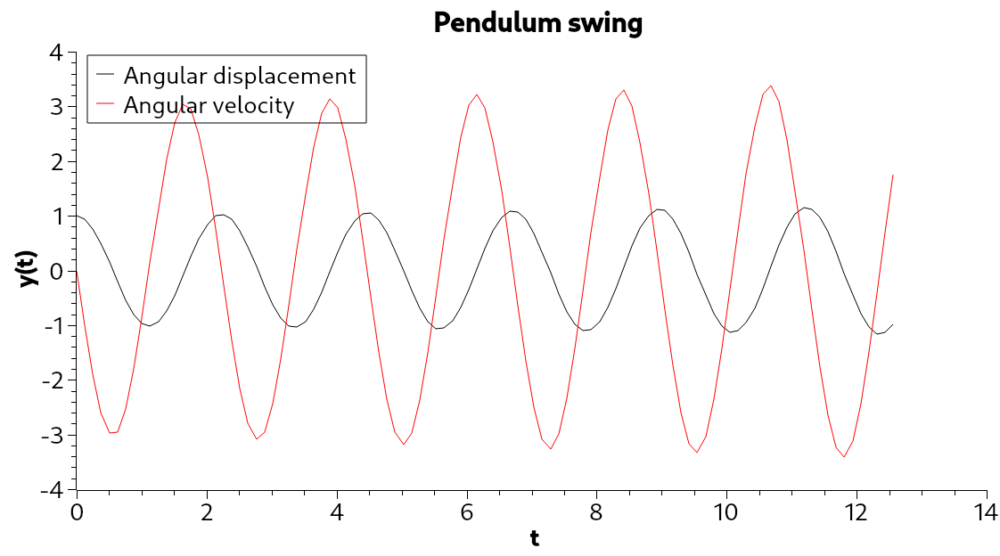

Automatic Differentiation#
The previous examples didn’t need any method to calculate derivatives, but most problems require this. For this solver, the automatic differentiation was chosen to achieve this, because it doesn’t suffer from numerical inaccuracies as much as numerical differentiation does.
This implementation is found in src/autodiff.hpp.
Extensions compared to upstream#
The upstream implementation was quite limited in terms of supported functions, but this version got extended with additional ones:
Cosine,
Exponential,
Logarithms of base \(e\), 2 and 10,
Power functions (with the basis as the variable).
Not only the number of the handled functions was extended, but also the handling of arithmetical operations was extended, as this version handles the subtraction and the division of two variables.
Additional overloads were added for non-AutoDiff types to ensure ease of usability without worrying about type conversion beforehand.
Results#
Calculating Legendre polynomials, and their derivatives#
To test the capabilities of the implementation, the Legendre polynomials and their first derivatives were calculated up to \(n=5\) with the code in demos/legendre.cpp. The results are attached below:
{kind=link}

Comparing these results to what can be seen on other websites shows that the results are the same.
Simulating a pendulum#
A further demonstration of the implementation is shown by simulating a pendulum with a length of 1. This was done with the Crank-Nicholson method, with a runtime of \(12 \pi\), and 1000 steps, as seen in demos/pendulumAD.cpp.

Another test with 100 steps and a runtime of \(4 \pi\) was done, its results are attached too:
{kind=link}
Conclusion#
As the plots above show, the results of the simulations (and the Legendre polynomials) are accurate, even with a long runtime and a lot of steps. This means that there is no sign of extra errors resulting from differentiation inaccuracies, as expected for this implementation.